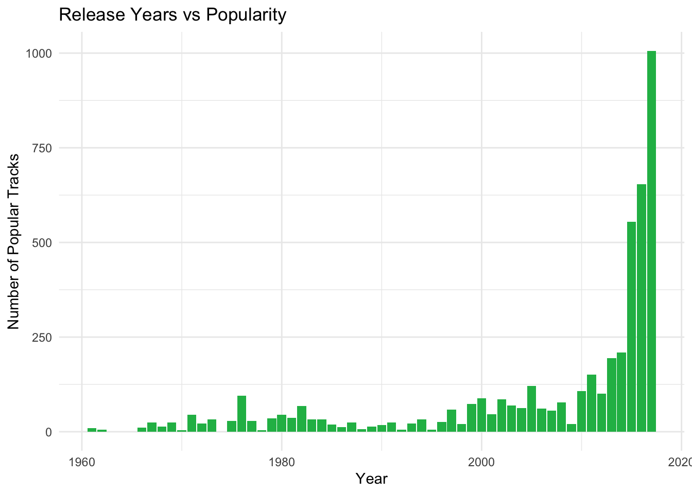
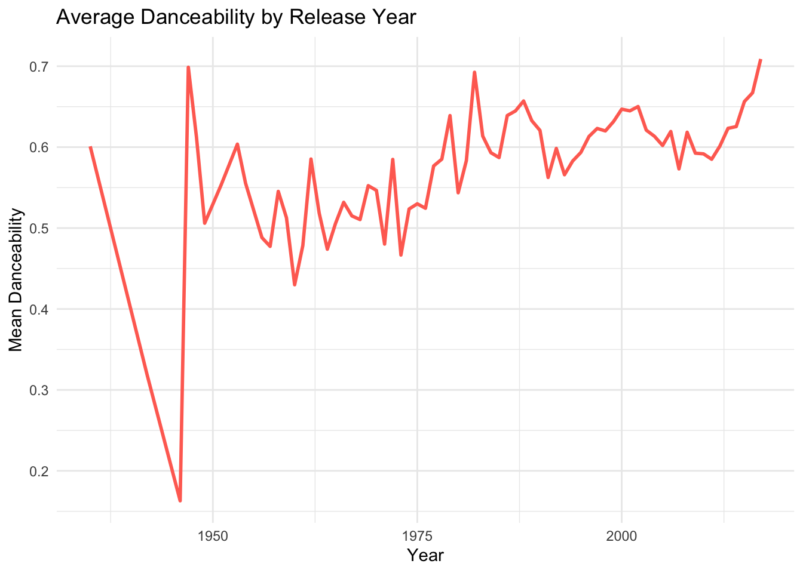
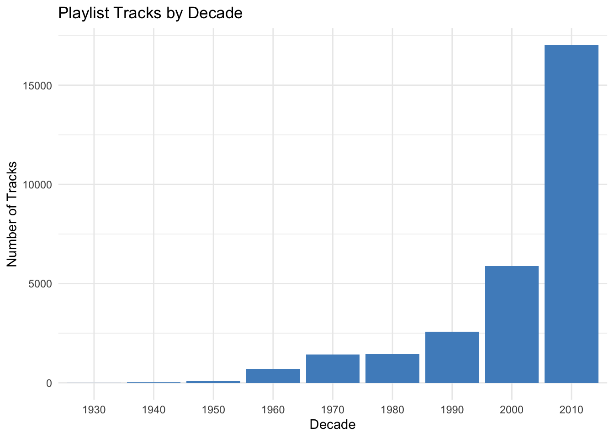
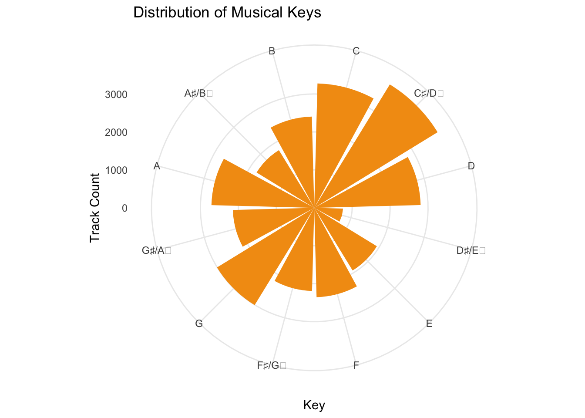
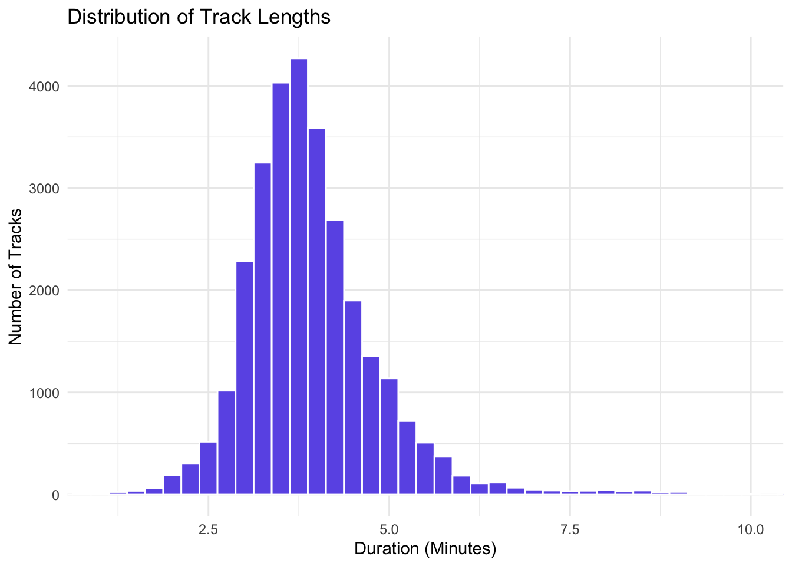
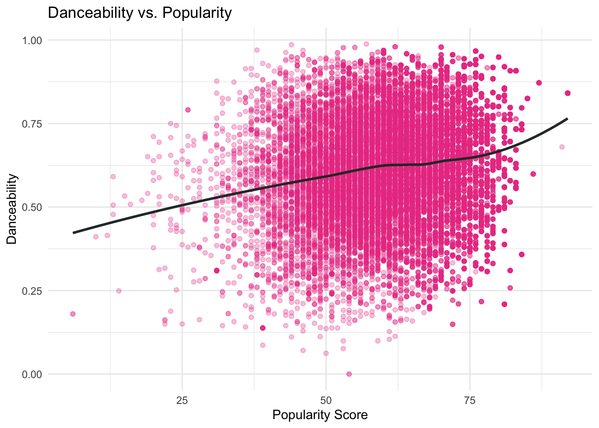
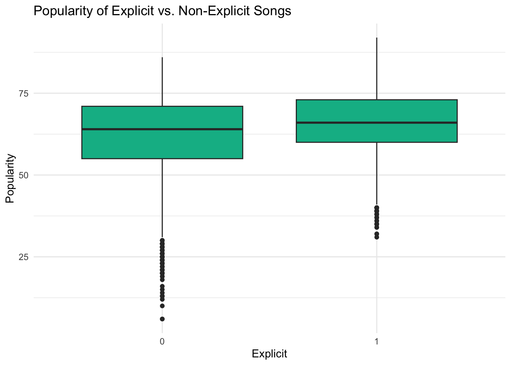
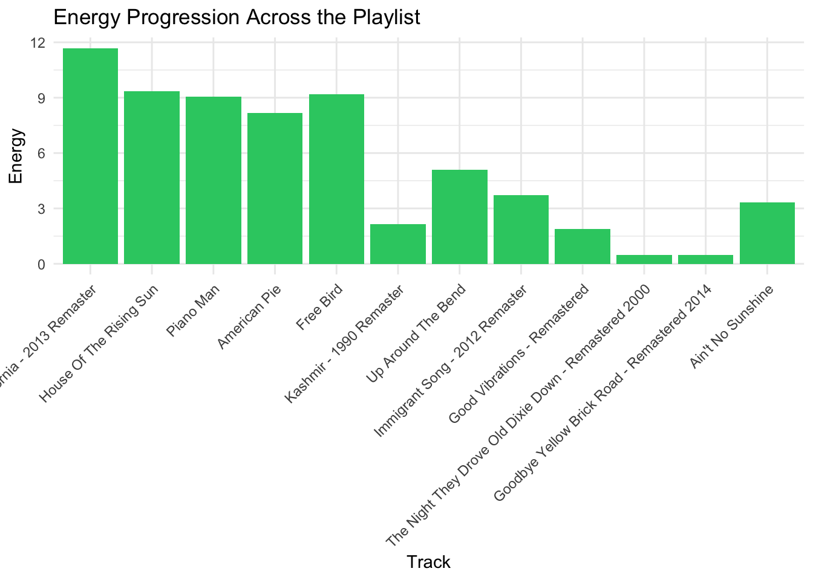

# A tibble: 1 × 2
`Distinct Tracks` `Distinct Artist`
<int> <int>
1 34443 9754MP03: Spotify Song Analytics
Overview
This mini-project investigates Spotify song characteristics to discover which elements make tracks popular. We start by analyzing both the structure and variables within the dataset. In this mini-project, we’ll explore Spotify song characteristics and playlists using two external datasets mirrored from GitHub. We’ll begin by downloading and preparing the song data, followed by extracting and cleaning playlist-level information.
Initial Exploration
Let’s examine the data scope before moving forward with detailed analysis. The dataset contains what total number of distinct songs and artists? Which specific tracks appear most frequently across playlists? Do any playlists or songs stand out from the rest as unexpected discoveries?
The questions guide us to understand our data as both numerical information and as evidence of how listeners behave and cultural patterns evolve.
1. How many distinct tracks and artists are represented in the playlist data?
The number of unique tracks is 34443 and the number of unique artists is 9754. This gives us an idea of how diverse the content is.
2. What are the 5 most popular tracks in the playlist data?
# A tibble: 5 × 2
track_name n
<chr> <int>
1 Closer 75
2 One Dance 55
3 HUMBLE. 52
4 Ride 52
5 Broccoli (feat. Lil Yachty) 50The five most frequently appearing tracks in playlists are shown above. They may not be current hits, but they represent what was most frequently added at the time the data was collected.
3. What is the most popular track in the playlist data that does not have a corresponding entry in the song characteristics data?
# A tibble: 1 × 2
track_name n
<chr> <int>
1 One Dance 55The track “One Dance” appears frequently in playlists yet fails to appear in the song analytics dataset which suggests a possible time difference between dataset exports.
4. According to the song characteristics data, what is the most “danceable” track? How often does it appear in a playlist?
# A tibble: 1 × 4
name artists danceability playlist_appearances
<chr> <chr> <dbl> <int>
1 Funky Cold Medina ['Tone-Loc'] 0.988 1The tool reveals the most popular danceable track to be “Funky Cold Medina” along with its playlist frequency which links track-level analytics to actual playlist behavior.
5. Which playlist has the longest average track length?
# A tibble: 1 × 3
playlist_id playlist_name avg_duration
<int> <chr> <dbl>
1 667 classical 411149.The classical playlist seems to prefer longer songs, which is typical of the genre.
6. What is the most popular playlist on Spotify?
# A tibble: 1 × 3
playlist_id playlist_name playlist_followers
<int> <chr> <int>
1 765 Tangled 1038The playlist with the highest follower count in the dataset is “Tangled”.
Identifying Characteristics of Popular Songs
We have examined which songs and artists appear in the data so we will now examine the features that determine popularity. What characteristics make a song more likely to be included in playlists? Do popular tracks tend to have specific features such as danceability, key or track length?
These questions will be answered by a set of visualizations that show patterns in tracks, release years and musical traits.
2. In what year were the most popular songs released?
Do listeners mostly listen to new songs or do they stick to older hits?

Our results imply that the most popular songs were released in the 20th century.
3. In what year did danceability peak?
We will calculate the average danceability score by release year to see when “dancability” peaked.

Our graph shows that dancability had a steep rise in popularity in the late 40’s and had similar peaks in the 1980’s and 2000’s.
4. Which decade is most represented on user playlists?
The following analysis groups songs by decade to reveal which musical eras appear most frequently in user-created playlists.

It appears as though the 2010’s are the most popular decade in user-created playlists.
5. Musical Key Distribution (Polar Plot)
The musical keys exist in a natural cycle which we call the circle of fifths. The frequency of key usage will be represented through polar coordinates in a circular plot.

Keys such as C, C#/D♭ and G appear to be used more frequently than keys suchs as D#/E and A#/B♭.
6. What Are the Most Popular Track Lengths?
Do users prefer shorter songs, longer ballads, or something in between? Let’s find out by plotting track durations.

The typical track length appears to be around 3-4 minutes long.
7. Are Popular Songs More Danceable?
Let’s compare average danceability across different popularity levels.
`geom_smooth()` using formula = 'y ~ x'
The correlation between Dancability and Popularity seems to be weak and scattered.
8. Are Explicit Songs More Popular?
Let’s compare the correlation betweenpopularity and explicitly.

The popularity scores of explicit songs are slightly higher than those of non-explicit songs which indicates a weak relationship between explicit content and mainstream appeal.
# A tibble: 15 × 3
name artists n
<chr> <chr> <int>
1 "Stairway to Heaven - 2012 Remaster" ['Led Zeppelin'] 17
2 "Fortunate Son" ['Creedence Clearwa… 16
3 "Landslide" ['Fleetwood Mac'] 12
4 "Dreams - 2004 Remaster" ['Fleetwood Mac'] 9
5 "The Sound of Silence - Acoustic Version" ['Simon & Garfunkel… 9
6 "Beast Of Burden - Remastered" ['The Rolling Stone… 8
7 "Whole Lotta Love - 1990 Remaster" ['Led Zeppelin'] 8
8 "Another Brick in the Wall, Pt. 2" ['Pink Floyd'] 7
9 "Down On The Corner" ['Creedence Clearwa… 7
10 "Mrs. Robinson - From \"The Graduate\" Soundtrack" ['Simon & Garfunkel… 7
11 "Purple Haze" ['Jimi Hendrix'] 7
12 "Good Times Bad Times - 1993 Remaster" ['Led Zeppelin'] 6
13 "Rock and Roll - 2012 Remaster" ['Led Zeppelin'] 6
14 "Up Around The Bend" ['Creedence Clearwa… 6
15 "Wouldn't It Be Nice - Stereo Mix" ['The Beach Boys'] 6Task 6: Building a Playlist from Anchor Songs
What makes a great playlist? It’s not just about individual songs, but rather it’s about flow, cohesion, and musical compatibility. To explore this, we’ll start with two anchor songs and use a mix of musical and behavioral heuristics to find tracks that complement them.
For this task, we’ve chosen:
- 🎸 “Stairway to Heaven – 2012 Remaster” by Led Zeppelin
- 🇺🇸 “Fortunate Son” by Creedence Clearwater Revival
These two songs are rock classics that define a popular music sound for many people.
We’ll now explore five strategies to find songs that belong alongside them.
1. Songs Commonly Found on the Same Playlists
The following list shows the most frequently appearing songs on playlists that include either Stairway to Heaven or Fortunate Son. These tracks may not be musically identical, but they reflect the tastes of users who grouped them with our anchors — a strong signal of perceived compatibility.
# A tibble: 13 × 3
name artists n
<chr> <chr> <int>
1 Carry on Wayward Son ['Kansas'] 13
2 Brown Eyed Girl ['Van Morrison'] 12
3 Hotel California - 2013 Remaster ['Eagles'] 12
4 More Than a Feeling ['Boston'] 12
5 Sweet Emotion ['Aerosmith'] 10
6 Dream On ['Aerosmith'] 9
7 House Of The Rising Sun ['The Animals'] 9
8 Piano Man ['Billy Joel'] 9
9 Thunderstruck ['AC/DC'] 9
10 American Pie ['Don McLean'] 8
11 For What It's Worth ['Buffalo Springfield'] 8
12 Free Bird ['Lynyrd Skynyrd'] 8
13 Highway to Hell ['AC/DC'] 82. Songs in the Same Key and Tempo Range
These tracks share the same musical key and tempo range as the anchor songs to create a continuous listening flow.
# A tibble: 10 × 4
name artists key tempo
<chr> <chr> <dbl> <dbl>
1 "Twenty Miles" ['Deer Tick'] 0 114.
2 "Maybe IDK" ['Jon Bellion… 9 120.
3 "Fixer Upper - From \"Frozen\"/Soundtrack Version" ['Maia Wilson… 9 103.
4 "Check" ['Young Thug'] 0 111.
5 "Suffocate - Superclean" ['J. Holiday'] 9 82.8
6 "Double Vision" ['Foreigner'] 9 130.
7 "When I'm Gone" ['Wiz Khalifa… 9 92.0
8 "The Lemon Song - 1993 Remaster" ['Led Zeppeli… 9 90.5
9 "The Big Rock Candy Mountain" ['Harry McCli… 0 94.5
10 "Cell Therapy" ['Goodie Mob'] 0 83.13. Songs by the Same Artist
Below is a list of Led Zeppelin or Creedence Clearwater Revival songs that match in sound and message.
# A tibble: 29 × 2
name artists
<chr> <chr>
1 Kashmir - 1990 Remaster ['Led Zeppelin']
2 I Put A Spell On You ['Creedence Clearwater Revi…
3 Whole Lotta Love - 1990 Remaster ['Led Zeppelin']
4 The Lemon Song - 1993 Remaster ['Led Zeppelin']
5 Going to California - 2012 Remaster ['Led Zeppelin']
6 Down On The Corner ['Creedence Clearwater Revi…
7 Up Around The Bend ['Creedence Clearwater Revi…
8 Good Times Bad Times - 1993 Remaster ['Led Zeppelin']
9 What Is and What Should Never Be - 1990 Remaster ['Led Zeppelin']
10 The Wanton Song - 1990 Remaster ['Led Zeppelin']
# ℹ 19 more rows4. Songs from the Same Era with Similar Sound
These songs were released in the same time period and share similar acousticness, energy, and danceability values.
# A tibble: 10 × 6
name artists year acousticness danceability energy
<chr> <chr> <dbl> <dbl> <dbl> <dbl>
1 Loan Me a Dime ['Boz … 1969 0.309 0.392 0.471
2 Ain't No Sunshine ['Bill… 1971 0.457 0.479 0.416
3 Contemplation ['McCo… 1967 0.48 0.397 0.534
4 Goodbye Yellow Brick Road - R… ['Elto… 1973 0.446 0.559 0.473
5 Somebody to Love ['Jeff… 1967 0.408 0.504 0.578
6 To Sir with Love ['Lulu… 1967 0.361 0.546 0.399
7 The Wind Cries Mary ['Jimi… 1967 0.348 0.499 0.495
8 Get Together ['The … 1967 0.467 0.542 0.492
9 The Night They Drove Old Dixi… ['The … 1969 0.453 0.507 0.493
10 Me and Bobby McGee ['Jani… 1971 0.302 0.453 0.464Task 7: Creating The Ultimate Playlist
The time has arrived to construct the Ultimate Playlist from our identified candidate tracks.
This assignment requires both data analysis and creative judgment. Our two anchor songs “Stairway to Heaven” and “Fortunate Son” will serve as the base for constructing a 12-track playlist which maintains musical flow and thematic coherence while featuring established tracks alongside lesser-known songs.
Note
Our playlist must meet the following criteria:
at least 12 tracks.
2 songs that listeners have not heard before.
3 songs that fail to meet our established popularity criteria
The playlist needs to demonstrate progression through its structure which can either ascend and descend or follow another pattern.
# A tibble: 71 × 2
name artists
<chr> <chr>
1 Carry on Wayward Son ['Kansas']
2 Brown Eyed Girl ['Van Morrison']
3 Hotel California - 2013 Remaster ['Eagles']
4 More Than a Feeling ['Boston']
5 Sweet Emotion ['Aerosmith']
6 Dream On ['Aerosmith']
7 House Of The Rising Sun ['The Animals']
8 Piano Man ['Billy Joel']
9 Thunderstruck ['AC/DC']
10 American Pie ['Don McLean']
# ℹ 61 more rows
The Ultimate Playlist: Rock Vinyl Classics
The playlist follows a chronologicalpath through rock music history by combining powerful guitar solos with meaningful lyrics and everlasting musical compositions.
📝 Description
The playlist begins with emotional masterpieces which transform into an intense storm before ending with peaceful music. The playlist unites well-known songs with lesser-known tracks to create musical unity througdifferent energetic and tonal and instrumental elements.
🎧 Design Principles
The emotional foundation of the playlist begins with “Stairway to Heaven” and “Fortunate Son.”
The song arrangement follows a dynamic pattern which alternates between powerful sections and contemplative moments.
The playlist features a visual representation of acoustic elements and tempo and energy levels to achieve balanced peaks and valleys.
The playlist contains at least two unknown tracks and three lesser-known songs which demonstrate that exceptional music does not need widespread popularity.
The playlist weaves a narrative that explores both the musical genre and the historical period.